7. Gestión del acceso concurrente a los datos
Hasta ahora hemos utilizado tablas de las que éramos los únicos usuarios. En la práctica, en una máquina con múltiples usuarios, los datos suelen compartirse entre diferentes usuarios. Entonces surge la pregunta: ¿Quién puede utilizar tal o cual tabla y de qué manera (consulta, inserción, eliminación, adición, ...)?
7.1. Creación de usuarios de Firebird
Cuando trabajamos con IB-Expert, nos conectamos como usuario SYSDBA. Esta información se puede encontrar en las propiedades de la conexión abierta con SGBD:
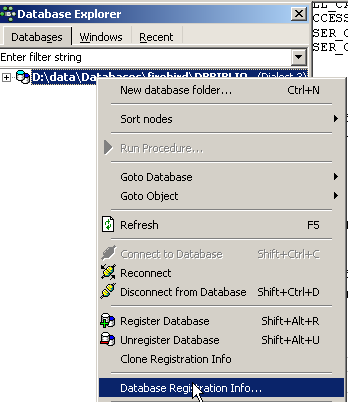 |  |
A la derecha, se ve que el usuario conectado es [SYSDBA]. Lo que no se ve es su contraseña, [masterkey]. [SYSDBA] es un usuario especial de Firebird: tiene todos los derechos sobre todos los objetos administrados por SGBD. Se pueden crear nuevos usuarios con IBExpert mediante la opción [Tools / User Manager] o el siguiente ícono:
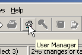
Aparece la ventana de administración de usuarios:

El botón [Add] permite crear nuevos usuarios:

Creemos, pues, los siguientes usuarios:
nombre | contraseña |
ADMIN1 | admin1 |
ADMIN2 | admin2 |
SELECT1 | select1 |
SELECT2 | select2 |
UPDATE1 | actualizar1 |
UPDATE2 | update2 |
7.2. Otorgar derechos de acceso a los usuarios
Una base de datos le pertenece a quien la creó. Las bases de datos que hemos creado hasta ahora pertenecían al usuario [SYSDBA]. Para ilustrar el concepto de derechos, creemos (Base de datos / Crear base de datos) una nueva base de datos con la identidad [ADMIN1, admin1]:

y guardémosla con el alias DBACCES (ADMIN1). El uso de alias permite abrir conexiones en una misma base asignándoles identificadores diferentes, lo que facilita su localización en el explorador de bases de datos de IBExpert:
 |  |
Ahora creemos las siguientes dos tablas: TA y TB:
Tabla TA
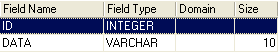 | 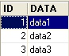 |
Tabla TB
 |
Estas tablas no tienen relación entre sí.
Con IB-Expert, creemos una segunda conexión a la base de datos [DBACCES], esta vez con el nombre [ADMIN2 / admin2]. Para ello, utilizamos la opción [Database / Register Database]:
 |  |
Seleccionemos DBACCES (ADMIN2) y abramos un editor SQL (Shift + F12):
 |
Tendremos la oportunidad de utilizar varias conexiones en la misma base de datos [DBACCES]. Para cada una de ellas, tendremos un editor SQL. En [1], el editor SQL indica el alias de la base de datos conectada. Usa esta indicación para saber en qué editor SQL te encuentras. Esto será importante porque vamos a crear conexiones que no tendrán los mismos derechos de acceso a los objetos de la base de datos.
Solicitemos el contenido de la tabla TA:

Recibimos el siguiente mensaje de error:

¿Qué significa esto? La base de datos [DBACCESS] fue creada por el usuario [ADMIN1] y, por lo tanto, es de su propiedad. Solo él tiene acceso a los distintos objetos de esta base de datos. Puede otorgar derechos de acceso a otros usuarios con el comando SQL GRANT. Este comando tiene varias sintaxis. Una de ellas es la siguiente:
GRANT privilegio1, privilegio2, ...| ALL PRIVILEGES ON table/vue TO usuario1, usuario2, ...| PUBLIC [ WITH GRANT OPTION ] | |
otorga privilegios de acceso privilègei o todos los privilegios (ALL PRIVILEGES) sobre table o vue a los usuarios utilisateuri o a todos los usuarios (PUBLIC). La cláusula WITH, GRANT y OPTION permite a los usuarios que han recibido los privilegios transferirlos a su vez a otros usuarios. |
Entre los privilegios privilègei que se pueden otorgar se encuentran los siguientes:
derecho a utilizar el comando DELETE en la tabla o vista. | |
derecho a utilizar el comando INSERT en la tabla o vista | |
derecho a utilizar el comando SELECT en la tabla o vista | |
derecho a utilizar el comando UPDATE en la tabla o vista. Este derecho puede restringirse a ciertas columnas mediante la sintaxis: GRANT update (col1, col2, ...) ON tabla/vista TO usuario1, usuario2, ...| PUBLIC [ WITH GRANT OPTION ] |
Otorguemos al usuario [ADMIN2] el derecho SELECT sobre la tabla TA. Solo el propietario de la tabla puede otorgar este derecho, c.a.d. En este caso, [ADMIN1]. Seleccionemos la conexión DBACCES (ADMIN1) y abramos un nuevo editor SQL (Shift+F12):
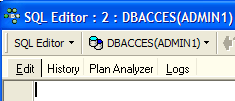
A continuación, vamos a alternar entre un editor SQL y otro. Para orientarnos, podemos usar la opción [Windows] del menú:

Arriba se ven los dos editores SQL, cada uno asociado a un usuario específico. Regresemos al editor SQL (ADMIN1) y ejecutemos el siguiente comando:
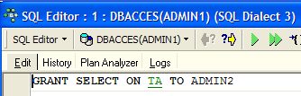
Luego, validémoslo con un COMMIT:

Una vez hecho esto, vamos al editor del usuario ADMIN2 para volver a ejecutar el SELECT que había fallado:
Recibimos el siguiente mensaje de error:
El usuario [ADMIN2] aún no tiene permiso para consultar la tabla [TA]. De hecho, parece que los permisos de un usuario se cargan en el momento en que inicia sesión. [ADMIN2] seguiría teniendo entonces los mismos permisos que al inicio de su sesión, es decir, ninguno. Verifiquémoslo. Desconectemos al usuario [ADMIN2]:
- seleccionar su sesión
- solicitar la desconexión haciendo clic con el botón derecho sobre la conexión y seleccionando la opción [Deconnect from database] o (Shift + Ctrl + D)

Si un panel solicita un [COMMIT], ingresa [COMMIT]. Luego, volvamos a conectar al usuario [ADMIN2] seleccionando la opción [Reconnect] mencionada anteriormente. Una vez hecho esto, regresemos al editor SQL (ADMIN2) y volvamos a ejecutar la solicitud SELECT que falló:
Entonces obtenemos el siguiente resultado:

Esta vez, ADMIN2 puede consultar la tabla TA gracias al derecho SELECT que le otorgó su propietario, ADMIN1. Normalmente, ese es el único derecho que tiene. Verifiquémoslo. Siguiendo en el editor SQL (ADMIN2):
 |  |
La pantalla de la derecha muestra que ADMIN2 no tiene el derecho DELETE sobre la tabla TA.
Regresemos al editor de SQL (ADMIN1) para otorgar más derechos al usuario ADMIN2. Ejecutamos sucesivamente los dos comandos siguientes:
 |  |
- El primer comando otorga al usuario ADMIN2 todos los derechos de acceso a la tabla [TA], además de la posibilidad de otorgar también derechos (WITH GRANT OPTION)
- el segundo comando valida el anterior
Una vez hecho esto, al igual que antes, renovemos la conexión del usuario [ADMIN2] (Desconectar / Reconectar) y luego, en el editor SQL (ADMIN2), escribamos los siguientes comandos:
 |  | 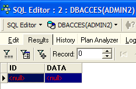 |
ADMIN2 ha eliminado todas las filas de la tabla TA. Anulemos esta eliminación con un ROLLBACK:
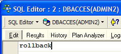 | |  |
Verifiquemos que ADMIN2, a su vez, pueda otorgar derechos sobre la tabla TA.
 |  |
Ahora abramos una sesión en la base de datos [DBACCES] (Base de datos / Registrar base de datos) con el nombre [SELECT1 / select1], uno de los usuarios creados anteriormente, y luego hagamos doble clic en el enlace así creado en [Database Explorer]:
 |  |
Seleccionemos esta nueva conexión y abramos un nuevo editor SQL (Shift + F12) para ingresar los siguientes comandos:
 |  |
El usuario SELECT1 sí tiene el derecho SELECT sobre la tabla TA. ¿Tiene la posibilidad de transferir este derecho al usuario SELECT2?
 |
La operación falló porque el usuario SELECT1 no recibió el derecho para transferir el derecho SELECT que había recibido del usuario ADMIN2. Para ello, habría sido necesario que elusuario ADMIN2 utilizara la cláusula WITH GRANT OPTION en su orden SQL GRANT. Las reglas de transmisión son sencillas:
- un usuario solo puede transmitir los derechos que ha recibido y nada más
- y solo puede transmitirlos si los ha recibido con el privilegio [WITH GRANT OPTION]
Un derecho otorgado puede retirarse con el comando REVOKE:
REVOKE privilegio1, privilegio2, ...| ALL PRIVILEGES ON table/vue FROM usuario1, usuario2, ...| PUBLIC | |
elimina los privilegios de acceso privilègei o todos los privilegios (ALL PRIVILEGES) en table o vue a los usuarios utilisateuri o a todos los usuarios (PUBLIC). |
Intentémoslo. Regresemos al editor SQL de ADMIN2 para eliminar el permiso SELECT que le otorgamos al usuario SELECT1:
 | 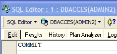 |
Desconectemos y luego volvamos a conectar la sesión del usuario SELECT1. A continuación, en el editor SQL (SELECT1), solicitemos el contenido de la tabla TA:
 |  |
El usuario SELECT1 efectivamente perdió su derecho de lectura de la tabla TA. Cabe señalar que fue ADMIN2 quien le otorgó ese derecho y ADMIN2 quien se lo retiró. Si ADMIN1 intenta retirárselo, no se reporta ningún error, pero luego se puede observar que SELECT1 ha conservado su derecho SELECT.
Se puede otorgar un derecho a todos con la sintaxis: GRANT derecho(s) ON tabla / vista TO PUBLIC. Así, otorguemos el derecho SELECT sobre la tabla TA a todos. Para hacerlo, podemos usar ADMIN1 o ADMIN2. Usamos ADMIN2:
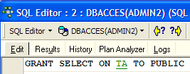 |  |
Creemos una conexión a la base de datos con el usuario USER1 / user1:
 | 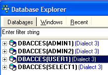 |
Con la sesión DBACCES (USER1), abramos un nuevo editor SQL (Shift + F12) y escribamos los siguientes comandos:
 |  |
El usuario USER1 sí tiene el derecho SELECT sobre la tabla TA.
7.3. Las transacciones
7.3.1. Niveles de aislamiento
Ahora dejamos de lado el tema de los derechos de acceso a los objetos de una base de datos para abordar el de los accesos concurrentes a dichos objetos. Dos usuarios con los derechos de acceso suficientes a un objeto de la base, por ejemplo, una tabla, quieren utilizarlo al mismo tiempo. ¿Qué sucede?
Cada usuario trabaja dentro de una transacción. Una transacción es una secuencia de órdenes SQL que se ejecuta de manera «atómica»:
- o bien todas las operaciones se realizan con éxito
- o bien una de ellas falla y, en ese caso, todas las anteriores se anulan
Al final, las operaciones de una transacción o bien se han aplicado todas con éxito, o bien ninguna se ha aplicado. Cuando el usuario tiene el control de la transacción (como ocurre en todo este documento), valida una transacción mediante un comando COMMIT o la cancela mediante un comando ROLLBACK.
Cada usuario trabaja en una transacción que le pertenece. Por lo general, se distinguen cuatro niveles de aislamiento entre los distintos usuarios:
- Lectura no confirmada
- Lectura confirmada
- Lectura repetible
- Serializable
Lectura no confirmada
Este modo de aislamiento también se conoce como «lectura sucia». A continuación se muestra un ejemplo de lo que puede suceder en este modo:
- un usuario U1 inicia una transacción en una tabla T
- un usuario U2 inicia una transacción en esa misma tabla T
- el usuario U1 modifica algunas filas de la tabla T, pero aún no las confirma
- el usuario U2 «ve» estas modificaciones y toma decisiones basándose en lo que ve
- El usuario cancela su transacción mediante un ROLLBACK
Se observa que, en el paso 4, el usuario U2 tomó una decisión basándose en datos que posteriormente resultarán ser falsos.
Lectura confirmada
Este modo de aislamiento evita el problema anterior. En este modo, el usuario U2 en el paso 4 no «verá» los cambios realizados por el usuario U1 en la tabla T. Solo las verá después de que U1 haya completado su transacción.
En este modo, también conocido como «Unrepeatable Read», pueden darse las siguientes situaciones:
- un usuario U1 inicia una transacción en una tabla T
- un usuario U2 inicia una transacción en esa misma tabla T
- El usuario U2 ejecuta un SELECT para obtener el promedio de la columna C de las filas de T que cumplen cierta condición
- El usuario U1 modifica (UPDATE) ciertos valores de la columna C de T y los valida (COMMIT)
- el usuario U2 vuelve a ejecutar el mismo SELECT que en el punto 3. Descubrirá que el promedio de la columna C ha cambiado debido a las modificaciones realizadas por U1.
Ahora, el usuario U2 solo ve las modificaciones «validadas» por U1. Pero, aunque permanece en la misma transacción, dos operaciones idénticas (las de los pasos 3 y 5) arrojan resultados diferentes. El término «lectura no repetible» (Unrepeatable Read) describe esta situación. Es una situación molesta para alguien que desea tener una imagen estable de la tabla T.
Lectura repetible
En este modo de aislamiento, un usuario tiene la garantía de obtener los mismos resultados en sus lecturas de la base de datos siempre y cuando permanezca en la misma transacción. Trabaja con una instantánea en la que nunca se reflejan las modificaciones realizadas por otras transacciones, incluso si estas han sido validadas. Solo verá dichos cambios cuando él mismo finalice su transacción con un COMMIT o un ROLLBACK.
Sin embargo, este modo de aislamiento aún no es perfecto. Después de la operación 3 anterior, las filas consultadas por el usuario U2 quedan bloqueadas. Durante la operación 4, el usuario U1 no podrá modificar (UPDATE) los valores de la columna C de esas filas. Sin embargo, sí puede agregar filas (INSERT). Si algunas de las filas agregadas cumplen la condición evaluada en el paso 3, la operación 5 dará un promedio diferente al obtenido en el paso 3 debido a las filas agregadas.
Para resolver este nuevo problema, hay que cambiar al nivel de aislamiento «Serializable».
Serializable
En este modo de aislamiento, las transacciones son completamente independientes unas de otras. Garantiza que el resultado de dos transacciones realizadas simultáneamente será el mismo que si se hubieran realizado una tras otra. Para lograr este resultado, durante la operación 4, en la que el usuario U1 desea agregar filas que modificarían el resultado de la transacción SELECT del usuario U1, se le impedirá hacerlo. Un mensaje de error le indicará que la inserción no es posible. Será posible una vez que el usuario U2 haya validado su transacción.
Los cuatro niveles de aislamiento de transacciones SQL no están disponibles en todos los SGBD. Firebird ofrece los siguientes niveles de aislamiento:
- snapshot: modo de aislamiento por defecto. Corresponde al modo «Repeatable Read» del estándar SQL.
- lectura confirmada: corresponde al modo «lectura confirmada» del estándar SQL
Este nivel de aislamiento se establece mediante el comando SET TRANSACTION:
SET TRANSACTION [READ WRITE | READ ONLY] [WAIT|NOWAIT] ISOLATION LEVEL [SNAPSHOT | READ COMMITTED] | |
Las palabras clave subrayadas son los valores predeterminados READ WRITE: la transacción puede leer y escribir READ ONLY: la transacción solo puede leer WAIT: en caso de conflicto entre dos transacciones, la que no pudo realizar su operación espera a que se valide la otra transacción. Ya no puede emitir órdenes SQL. NOWAIT: la transacción que no pudo realizar su operación no queda bloqueada. Recibe un mensaje de error y puede seguir trabajando. ISOLATION LEVEL [SNAPSHOT | READ COMMITTED]: nivel de aislamiento |
Probemos. En el editor SQL (ADMIN1) escribimos el siguiente comando SQL:

Vemos que no se ha autorizado. No sabemos por qué...
IB-Expert permite configurar el modo de aislamiento de otra manera. Hacemos clic con el botón derecho en la conexión DBACCES(ADMIN1) para seleccionar la opción [Database Registration Info]:
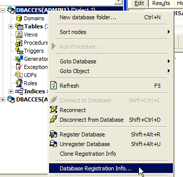 | 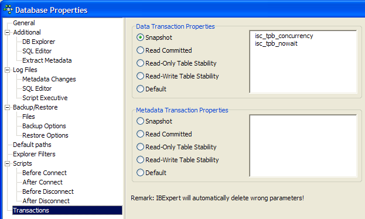 |
La pantalla de la derecha muestra la presencia de una opción [Transactions]. Esta nos permitirá establecer el nivel de aislamiento de las transacciones. Aquí lo fijamos en [snapshot]. Hacemos lo mismo con la conexión DBACCES (ADMIN2).
7.3.2. El modo snapshot
Analicemos el nivel de aislamiento snapshot, que es el modo de aislamiento predeterminado de Firebird. Cuando el usuario inicia una transacción, se toma una instantánea de la base de datos. El usuario trabajará entonces sobre esa instantánea. De esta manera, cada usuario trabaja en una instantánea propia de la base de datos. Si realiza modificaciones en ella, los demás usuarios no las ven. Solo las verán cuando el usuario que las haya realizado las haya validado mediante un COMMIT.
Se pueden considerar dos casos:
- un usuario lee la tabla (select) mientras otro la está modificando (insert, update, delete)
- ambos usuarios quieren modificar la tabla al mismo tiempo
7.3.2.1. Principio de lectura coherente
Supongamos que hay dos usuarios, U1 y U2, que trabajan en la misma tabla TAB:
La transacción del usuario U1 comienza en el momento T1a y termina en el momento T1b.
La transacción del usuario U2 comienza en el momento T2a y termina en el momento T2b.
U1 está trabajando en una foto de TAB tomada en el momento T1a. Entre T1a y T1b, modifica TAB. Los demás usuarios tendrán acceso a estas modificaciones solo en el momento T1b, cuando U1 realice un COMMIT.
U2 trabaja en una foto de TAB tomada en el momento T2a, por lo tanto, la misma foto que utilizó U1 (si otros usuarios no han modificado el original mientras tanto). No «ve» los cambios que el usuario U1 pudo haber realizado en TAB. Solo podrá verlos en el momento T1b.
Ilustremos este punto con nuestra base [DBACCES]. Haremos que los dos usuarios, [ADMIN1] y [ADMIN2], trabajen simultáneamente. Accedamos a la conexión DBACCES (ADMIN1) y, en el editor SQL de ADMIN1, realicemos las siguientes operaciones:
 | 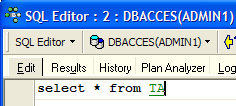 |  |
ADMIN1 modificó la fila n.º 2 de la tabla TA, pero aún no ha validado (COMMIT) su operación. El usuario ADMIN2 realiza entonces un SELECT en la tabla TA (se pasa al editor SQL desde ADMIN2). Nos encontramos antes del momento T2a del ejemplo.
 |  |
Regreso al editor SQL de ADMIN1, que valida su adición:
 |
Regreso al editor SQL de ADMIN2 para volver a crear el SELECT:
|  |
ADMIN2 ve las modificaciones realizadas por ADMIN1. En el modo de instantánea, una transacción no ve las modificaciones realizadas por otras transacciones hasta que estas últimas hayan finalizado.
7.3.2.2. Modificación simultánea de un mismo objeto de la base de datos por parte de dos transacciones
Tomemos un ejemplo de contabilidad: U1 y U2 están trabajando en cuentas. U1 carga a comptex un monto S y abona a comptey el mismo monto. Lo hará en varios pasos:
U1 inicia una transacción en el momento T1a, debita a comptex en el momento T1b, abona a comptey en el momento T1c y valida ambas operaciones en el momento T1d. Supongamos además que U2 quiera hacer lo mismo, comience su transacción en el momento T2a y la termine en el momento T2d según el siguiente esquema:
--------+----------+----+----+-------+------+-----+-------+---------
T1a T1b T2a T1c T2b T1d T2c T2d
En el momento T2, se toma una instantánea de la tabla de cuentas para U2. Esta es coherente según el principio de snapshot. U2 ve el estado inicial de las cuentas comptex y comptey, ya que U1 aún no ha validado sus operaciones.
Supongamos que comptex tiene un saldo inicial de 1000 € y que cada uno de los usuarios U1 y U2 desea debitarle 100 €.
- En el momento T1b, U1 reduce el saldo de comptex en 100 €, dejándolo así en 90 €. Esta operación no se validará hasta el momento T1d.
- En el momento T2b, U2 ve que comptex tiene 1000 € (principio de lectura coherente) y lo decrementa en 100 €, con lo que queda en 90 €.
- Al final, en el momento T2d, cuando todo se haya validado, comptex tendrá un saldo de 90 € en lugar de los 80 € esperados.
La solución a este problema es impedir que U2 modifique comptex mientras U1 no haya finalizado su transacción. De esta manera, U2 quedará bloqueado hasta el momento T1d. El modo snapshot proporciona este mecanismo.
Ilustremos esto con la base DBACCES. ADMIN1 inicia una transacción en su editor SQL (ADMIN1):
 | 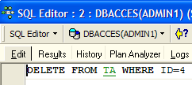 |  |  |
Comenzamos por ejecutar un COMMIT para asegurarnos de iniciar una nueva transacción. Luego eliminamos la línea n.º 4. La transacción aún no se ha validado.
A su vez, ADMIN2 inicia una transacción en su editor SQL (ADMIN2):
 |  |
La pantalla de la derecha muestra que ADMIN2 intentó modificar la línea n.º 4. Se le respondió que eso no era posible porque otra persona ya la había modificado, pero aún no había validado ese cambio.
Volvamos al editor SQL (ADMIN1) para crear el COMMIT:

Volvamos al editor SQL (ADMIN2) para volver a ejecutar el comando UPDATE:
 |  |
 |  |
La operación UPDATE se ejecuta correctamente, a pesar de que la línea n.º 4 ya no existe, como lo muestra el SELECT que sigue. Es en ese momento cuando ADMIN2 detecta que la línea ya no existe.
7.3.2.3. El modo «Repeatable Read»
Ahora veamos el modo «Repeatable Read». Este nivel de aislamiento lo proporciona el modo «snapshot». Garantiza que una transacción siempre obtenga el mismo resultado al leer la base de datos.
Comencemos trabajando con el editor SQL de ADMIN2:
 |  |  |
 |  |
Pasemos ahora al editor SQL de ADMIN1:
 |  |  |
 |  |  |
 |  |
El usuario ADMIN1 agregó dos líneas y validó su transacción. Ahora regresemos al editor SQL (ADMIN2) para volver a ejecutar el SELECT SUM:
 |  |
Se observa que ADMIN2 no detecta las líneas agregadas de ADMIN1, a pesar de que estas fueron validadas por un COMMIT. El SELECT SUM arroja el mismo resultado que antes de las adiciones. Este es el principio de la lectura repetible.
Ahora, sin salir del editor SQL (ADMIN2), validemos la transacción con un COMMIT y luego volvamos a ejecutar el SELECT SUM:
 |  |  |
Las líneas agregadas por ADMIN1 ahora se toman en cuenta.
7.3.3. El modo «Committed Read»
Ahora veamos el modo «Committed Read». Este nivel de aislamiento es similar al de snapshot, salvo en lo que respecta a la «Repeatable Read».
Comenzamos por cambiar el nivel de aislamiento de las transacciones de ambas conexiones.
- Desconectamos a los dos usuarios ADMIN1 y ADMIN2
- Cambiamos el nivel de aislamiento de sus transacciones

- Volvemos a conectar a los usuarios ADMIN1 y ADMIN2
Ahora retomamos el ejemplo anterior que ilustraba la «lectura repetible» para demostrar que ya no observamos el mismo comportamiento. Comencemos por trabajar con el editor SQL de ADMIN2:
| | |
| |
Pasemos ahora al editor SQL de ADMIN1:
| | |
| | |
| |
El usuario ADMIN1 agregó dos líneas y validó su transacción. Ahora regresemos al editor SQL (ADMIN2) para volver a ejecutar el SELECT SUM:
| 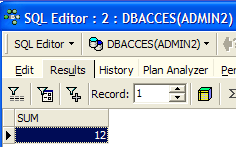 |
El SELECT SUM no da el mismo resultado que antes de las modificaciones realizadas por ADMIN1. Esa es la diferencia entre los modos «snapshot» y «read committed».